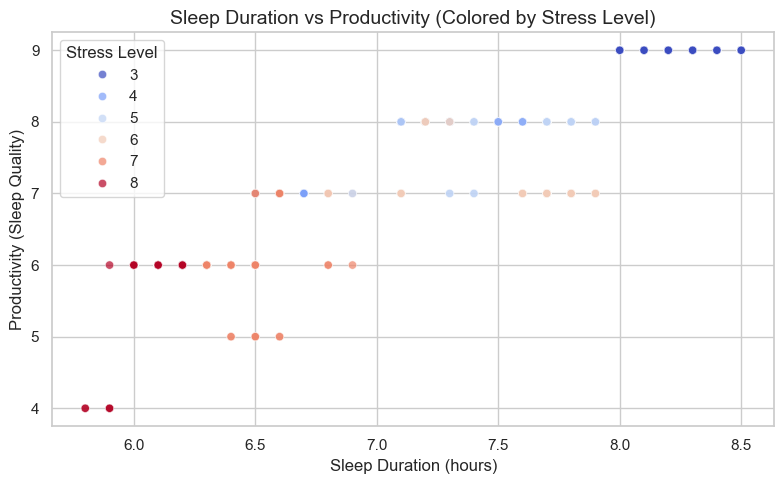
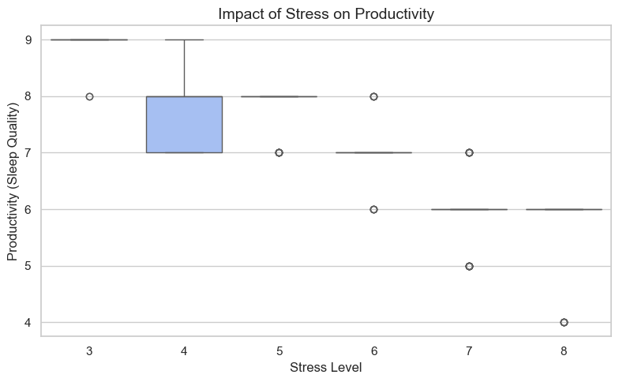

Data-Driven Insights into Sleep, Stress, and Productivity
Understanding how sleep affects productivity is a common concern for students and professionals. Many people believe that getting more sleep automatically leads to better performance, but the reality may be more complex.
This project explores the relationship between sleep duration, stress levels, and productivity using a real-world dataset.
Research Question
Is sleep duration the main factor driving productivity, or do other variables such as stress play a more significant role?
This analysis aims to explore whether: - More sleep always leads to higher productivity - Stress reduces productivity even when sleep is sufficient - Productivity is influenced by multiple interacting factors
1. Dataset Overview
The dataset used in this analysis contains information about individuals’ sleep habits, lifestyle factors, and health indicators.
Key variables include:
Sleep Duration: Number of hours slept per night
Quality of Sleep: A numerical measure used as a proxy for productivity
Stress Level: Self-reported stress levels
Physical Activity Level: Daily activity level
BMI Category: Body mass index classification
For this study, quality of sleep is used as a proxy for productivity, as better sleep quality is strongly associated with improved cognitive performance and daily functioning.
import pandas as pddf = pd.read_csv("data/Sleep_health_and_lifestyle_dataset.csv")df.head()
The first visualization examines the relationship between sleep duration and productivity.
We expect that longer sleep duration may be associated with higher productivity, but this relationship may not be strictly linear.
import matplotlib.pyplot as pltimport seaborn as snssns.set(style="whitegrid")plt.figure(figsize=(8,5))sns.scatterplot( data=df, x="Sleep Duration", y="Quality of Sleep", hue="Stress Level", palette="coolwarm", alpha=0.7)plt.title("Sleep Duration vs Productivity (Colored by Stress Level)", fontsize=14)plt.xlabel("Sleep Duration (hours)")plt.ylabel("Productivity (Sleep Quality)")plt.tight_layout()plt.savefig("figures/sleep_vs_productivity.png", dpi=300)plt.show()

Interpretation
The scatter plot shows a generally positive relationship between sleep duration and productivity. However, the variation across different stress levels suggests that sleep alone does not fully explain productivity.
Individuals with higher stress levels tend to have lower productivity, even when they get sufficient sleep. This indicates that stress may act as a moderating factor in the relationship between sleep and performance.
3. Impact of Stress on Productivity
The second visualization focuses on how stress levels affect productivity.
Unlike sleep duration, stress is expected to have a more direct negative impact on productivity.
import matplotlib.pyplot as pltimport seaborn as snsplt.figure(figsize=(8,5))sns.boxplot( data=df, x="Stress Level", y="Quality of Sleep", palette="coolwarm")plt.title("Impact of Stress on Productivity", fontsize=14)plt.xlabel("Stress Level")plt.ylabel("Productivity (Sleep Quality)")plt.tight_layout()plt.savefig("figures/stress_vs_productivity.png", dpi=300)plt.show()
C:\Users\23730\AppData\Local\Temp\ipykernel_11440\2652947256.py:6: FutureWarning:
Passing `palette` without assigning `hue` is deprecated and will be removed in v0.14.0. Assign the `x` variable to `hue` and set `legend=False` for the same effect.
sns.boxplot(

Interpretation
The results clearly show that higher stress levels are associated with lower productivity.
This suggests that stress plays a critical role in shaping performance outcomes. Even individuals who sleep well may experience reduced productivity if their stress levels are high.
Therefore, improving productivity may require not only better sleep habits but also effective stress management.
4. Interactive Exploration: Sleep, Stress, and Productivity
To better understand the relationship between sleep and productivity, an interactive visualization is provided below.
This chart allows users to: - Hover over individual data points to see detailed information - Explore how productivity varies across different stress levels - Observe how multiple factors interact simultaneously
Unlike static charts, this interactive view enables deeper exploration of the data and reveals patterns that may not be immediately visible.
import plotly.express as pxfig = px.scatter( df, x="Sleep Duration", y="Quality of Sleep", color="Stress Level", size="Physical Activity Level", hover_data=["Age", "Occupation"], title="Interactive: Sleep vs Productivity (Colored by Stress)")fig.write_html("figures/interactive_plot.html")fig.show()
Unable to display output for mime type(s): application/vnd.plotly.v1+json
5. Linked View: How Stress Changes the Sleep–Productivity Relationship
To further explore the role of stress, the dataset is divided into different stress categories (Low, Medium, High).
This visualization presents a linked view where the relationship between sleep and productivity is shown separately for each stress group.
By comparing these panels side by side, we can better understand how stress modifies the impact of sleep on productivity.
Combining both the interactive and linked visualizations, a clear pattern emerges:
Sleep alone is not sufficient to guarantee high productivity. While it plays an important role, its benefits are significantly reduced under high stress conditions.
This highlights the importance of a balanced approach to well-being, where both adequate sleep and effective stress management are essential for optimal performance.